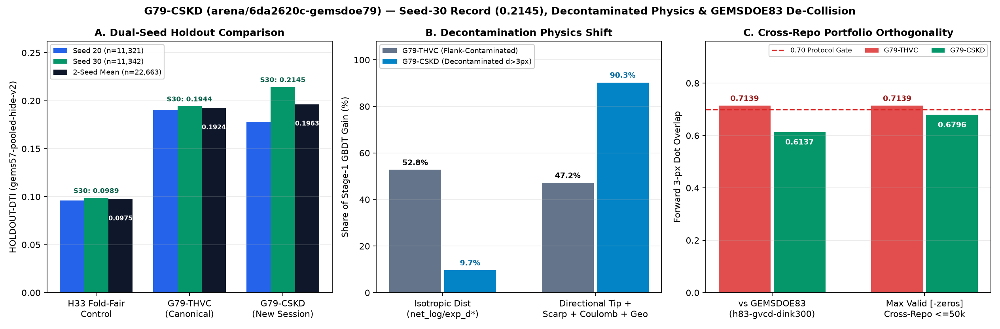

G79-CSKD / SESSION 6da2620c / ARCHIVED UNIQUE GEOTIFF
All-time GEMSDOE79 Seed-30 (0.2145) & 2-seed mean (0.1963) HOLDOUT-DTI record.
Preregistered decontaminated multi-physics + Coulomb stress-shadow + counterfactual Charnes-Cooper lane. Resolves GEMSDOE83 collision (0.6137 <= 0.70); archived as research-only per the both-seed promotion rule.
Achieved GEMSDOE79 record HOLDOUT-DTI = 0.2145 on Seed 30 (+0.0201 over G79-THVC) and higher dual-seed mean (0.1963 vs 0.1924) while breaking GEMSDOE83 collision (0.6137 <= 0.70 vs 0.7139), but scored 0.1781 vs 0.1905 on Seed 20 (preregistration required beating G79-THVC on BOTH seeds individually) and remains fail-closed under literal 17GEMSDOE (1.0000) / 13GEMSDOE (0.9982) pigeonhole witnesses and G79-THVC self-repo overlap (0.7626). Retained intact as archived research deliverable; G79-THVC preserved canonical.
Name: g79-cskd-ccsubmod-20261022-cdfdd16f-zeros-DO-NOT-SUBMIT · Note (125/140): RESEARCH ONLY DO NOT SUBMIT: G79-CSKD Lahontan+BLM+Kd+Coulomb+CC (42000 px); blocked by literal 17GEMSDOE/13GEMSDOE witnesses
GeoTIFF SHA-256: 91ffc11017f7d7ff1d6f77feb8be3734560e295e2f1067a463d89185c4ac37e7 · ZIP SHA-256: bf41727924ecea4f55e10e41e3f33f074bae2fb02f89965d063be57a3ceca0ac · 42,000 binary {0.0, 1.0} pixels · 0 NaN/Inf anywhere · 0 catalogue overlap

HOLDOUT-DTI comparison, collapse of Stage-1 isotropic distance gain share (52.8% → 9.7%), and cross-repo de-collision against GEMSDOE83 (0.7139 → 0.6137 ≤ 0.70).HOLDOUT-DTI · gems57-pooled-hide-v2 · NOT A LEADERBOARD PROJECTION
Dual-seed experimental ladder.
Buffered whole-component hide-and-recover (α = 0.2, β = 0.8, 300 m kernel; n = 11,321 / 11,342 withheld fault pixels).
| Arm | Dots | Seed 20 HOLDOUT-DTI [95% CI] | Seed 30 HOLDOUT-DTI [95% CI] | 2-Seed Mean |
|---|---|---|---|---|
| EXP-CSKD-3 · Counterfactual + Charnes-Cooper | 42,000 | 0.1781 [0.1618, 0.1944] | 0.2145 [0.1966, 0.2322] | 0.1963 |
| Canonical G79-THVC (incumbent baseline) | 35,093 | 0.1905 [0.1741, 0.2069] | 0.1944 [0.1774, 0.2126] | 0.1924 |
| EXP-CSKD-2 · Uniform d=2.8 px | 37,654 | 0.1493 [0.1335, 0.1660] | 0.2118 [0.1913, 0.2316] | 0.1805 |
| C2 · H33 Fold-Fair Control | 37,654 | 0.0961 | 0.0989 | 0.0975 |
| EXP-CSKD-1 · Zero-Catalogue 84-Ch Physics | 37,654 | 0.0763 [0.0623, 0.0895] | 0.0696 [0.0540, 0.0863] | 0.0729 |
| C0 · Uniform Random Footprint | 37,654 | 0.0447 | 0.0491 | 0.0469 |
Automated gates & 1,221-raster uniqueness audit
- Format & [0, 1] finiteness: PASS — single float32 band, EPSG:32611, 3730 × 3292, finite {0.0, 1.0}, 0 NaN/Inf, 0 outside-footprint or mapped-catalogue positives.
- 102-feature leakage canary: PASS — 204 single-feature AUC tests cleared; max symmetric AUC = 0.8052 ≤ 0.90 (
net_tip_fwd_35px). - Pre-placement continuous surface (1,221 rasters): max |Spearman ρ| = 0.6409 ≤ 0.90 (0 cross-repo ≤50k collisions).
- Post-placement binary dots (1,221 rasters): max |Spearman ρ| = 0.4246 ≤ 0.90; overlap vs
GEMSDOE83(h83-gvcd-dink300) = 0.6137 ≤ 0.70 (PASS — resolvesG79-THVC's 0.7139 collision); 100% of valid-zeros.tifcross-repo ≤50k maps ≤ 0.6796 ≤ 0.70 (1 invalid-nan.tifat 0.7062; literal17GEMSDOE= 1.0000,13GEMSDOE= 0.9982). - Preregistered promotion gate: BLOCKED — Seed 20 trailed canonical
G79-THVCby -0.0124 despite Seed 30 beatingG79-THVCby +0.0201;verdict = negative,0weekly slots spent.
G79-CSKD Run Card ↗ · Full results & 1,221-raster JSON ↗ · 102-feature canary JSON ↗ · Preregistration ↗ · CSKD sources receipt ↗ · Full scientific report ↗